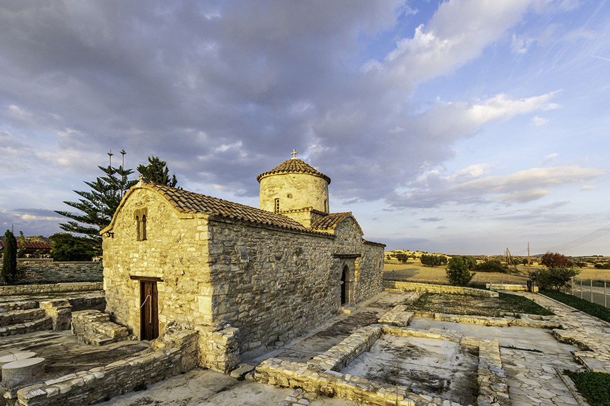
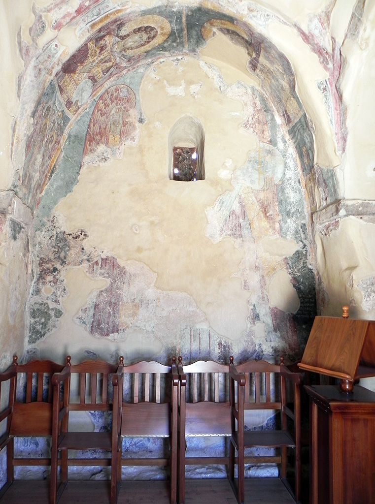
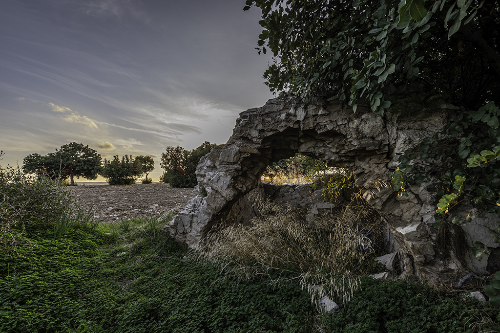
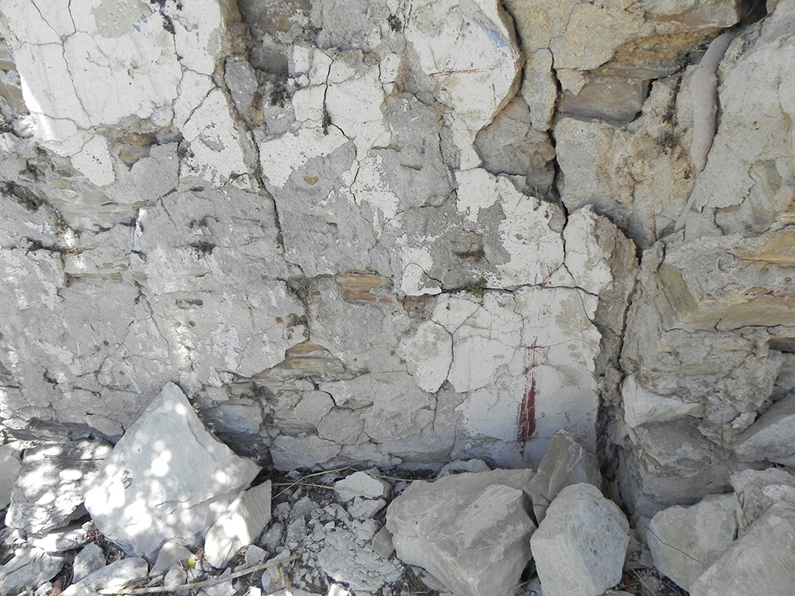

The church of Panagia Kophinou highlights the importance of place and how religious and spiritual associations can become important factors for shaping space through time in the sacred landscape of the Xeros River valley. As early as the end of the 6th or early 7th century AD, the inhabitants of the region built a basilica at this site to accommodate their religious cults. Notwithstanding the forces of nature that destroyed the basilica by an earthquake in the middle of the 7th century, the people of the area built the standing domed church of Panagia on the basilica's ruins in the early 11th century. After 1974, the community of Greek-Cypriot refugees started using the area north of the church as a cemetery.
Στο ιερό τοπίο της κοιλάδας του ποταμού Ξερού, ο ναός της Παναγίας στην Κοφίνου υπογραμμίζει τη σημασία του τόπου και πώς οι θρησκευτικοί και πνευματικοί δεσμοί μπορούν να επηρεάσουν τη διαμόρφωση του χώρου μέσα στο χρόνο. Στα τέλη του 6ου ή στις αρχές του 7ου αιώνα μ.Χ., οι κάτοικοι της περιοχής οικοδόμησαν τρίκλιτη βασιλική στη θέση αυτή προκειμένου να εξυπηρετήσουν τις λατρευτικές τους ανάγκες. Μετά την καταστροφή της βασιλικής από σεισμό στα μέσα του 7ου αιώνα και τη σταδιακή εγκατάλειψή της, οι πιστοί ανέγειραν στα ερείπιά της τον υφιστάμενο τρουλαίο ναό της Παναγίας στις αρχές του 11ου αιώνα. Μετά το 1974, η κοινότητα των Ελληνοκυπρίων προσφύγων ξεκίνησε να χρησιμοποιεί το χώρο βόρεια της εκκλησίας ως κοιμητήριο.
Panayia Kofinu kilisesi, yerin önemini ve dini ve ruhani bağların Kseros Nehri vadisinin kutsal manzarasında zamanla mekânı şekillendirmek için nasıl önemli faktörler olabileceğini vurguluyor. MS 6. yüzyılın sonu veya 7. yüzyılın başlarında, bölgenin sakinleri bu alanda dini inançlarını barındırmak için bir bazilika inşa ettiler. 7. yüzyılın ortalarında bir depremle bazilikayı tahrip eden doğa güçlerine rağmen, bölge halkı 11. yüzyılın başlarında bazilika kalıntıları üzerine duran kubbeli Panayia kilisesini inşa etti. 1974'ten sonra Kıbrıslı Rum mülteciler, kilisenin kuzeyindeki bölgeyi mezarlık olarak kullanmaya başladı.
The basilica, whose remains you can see surrounding the standing domed church that dominates the landscape, was excavated by the Department of Antiquities in 2011-2013. This Early Byzantine basilica bears similar architectural features with corresponding types in Asia Minor, Greece and the Near East. The 3D reconstruction of the basilica includes the narthex to the west and the main church. The main church was divided into three aisles by two series of columns with Doric-style capitals. The central aisle had a gabled timber roof, while the side aisles had a vaulted roof. The entrance to the narthex was at the north end of the west side.
Η βασιλική, τα κατάλοιπα της οποίας μπορείτε να δείτε γύρω από τον τρουλαίο μεσοβυζαντινό ναό της Παναγίας που δεσπόζει σήμερα στο αγροτικό τοπίο, ανασκάφηκε από το Τμήμα Αρχαιοτήτων την περίοδο 2011-2013. Η βασιλική του 6ου/7ου αιώνα, η οποία έχει αρχιτεκτονικά στοιχεία κοινά με αντίστοιχους τύπους στη Μικρά Ασία, την Ελλάδα και την Εγγύς Ανατολή, αποτελείτο από τρία κλίτη και δύο σειρές κιόνων με κιονόκρανα δωρικού ρυθμού. Στην τρισδιάστατη αναπαράσταση της βασιλικής περιλαμβάνονται ο νάρθηκας στα δυτικά και ο κυρίως ναός. Το κεντρικό κλίτος του κυρίως ναού έφερε ξύλινη δίρρικτη στέγη, ενώ τα πλάγια κλίτη θολωτή. Η είσοδος του νάρθηκα βρισκόταν στο βόρειο άκρο της δυτικής πλευράς.
Sizin de gördüğünüz gibi manzaraya hâkim olan kubbeli kiliseyi çevreleyen kalıntıları olan bazilika, 2011-2013 yıllarında Eski Eserler Dairesi tarafından kazılmıştı. Bu Erken Bizans bazilikası, Küçük Asya, Yunanistan ve Yakın Doğu'daki eş olan türlere benzer mimari özellikler taşımaktadır. Bazilikanın üç boyutlu yeniden yapılandırılması batıdaki narteksi ve ana kiliseyi içermektedir. Ana kilise, Dor başlıklara sahip olan iki sıra sütun ile üç koridora bölünmüştür. Orta koridorda alınıklı ahşap çatı, yan koridorlarda ise kubbeli bir çatı vardı. Narteksin girişi batı cephesinin kuzey ucundaydı.
Two rooms with desks, lodging seats and a tiny pool to the south of the basilica suggest that the original church had additional spaces used for catechism, hospitality and the performance of certain religious rites. The remains of structures to the north of the basilica have been associated with Herakleios (a local bishop) or with auxiliary spaces accommodating the religious needs of the faithful. The Early Byzantine church of Panagia is the only rural basilica in the region and must have functioned as a central sacred space and local economic centre for a series of contemporary villages and farms in the Xeros valley.
Δύο αίθουσες με θρανία, καθίσματα φιλοξενίας και μία μικρή «κολυμβήθρα» στα νότια της βασιλικής
υποδεικνύουν ότι ο ναός είχε βοηθητικούς χώρους για κατήχηση, τη φιλοξενία των πιστών και την
τέλεση μυστηρίων.
Τα κατάλοιπα κτηρίων στα βόρεια της βασιλικής πιστεύεται ότι αποτελούσαν μέρος του «επισκοπείου
του Ηρακλείου» ή χρησιμοποιούνταν ως χώροι για τις ανάγκες των πιστών.
Ο πρώιμος βυζαντινός ναός της Παναγίας υπήρξε η μοναδική αγροτική βασιλική στην περιοχή, η οποία
ενδεχομένως λειτουργούσε ως τοπικό θρησκευτικό και οικονομικό κέντρο για τα χωριά και τους
μικρούς αγροτικούς οικισμούς στην κοιλάδα του Ξερού.
Bazilikanın güneyinde bulunan iki sıralı oda, oturma yerleri ve küçük bir havuz, ilk kilisenin
ilmihal, konaklama ve belirli dini ayinlerin icrası için kullanılan ek alanlara sahip olduğunu
gösteriyor.
Bazilikanın kuzeyindeki yapı kalıntıları, İraklios (bölgenin piskoposu) veya inançlıların dini
ihtiyaçlarını karşılayan yardımcı mekanlarla ilişkilendirilmiştir.
Erken Bizans Dönemi Panayia kilisesi, bölgedeki tek kırsal bazilikadır ve Xeros vadisindeki bir
dizi çağdaş köy ve çiftlik için merkezi bir kutsal alan ve yerel ekonomik merkez olarak işlev
görmüş olmalıdır.
The standing Middle Byzantine domed church belongs to the rare ‘compressed cross-in-square’ type. Like the Early Byzantine basilica, its architecture is influenced by the ecclesiastical architectural tradition of Asia Minor and the Near East, occurring in Cyprus during the Middle Byzantine period in the 11th and 12th centuries. A number of Late Medieval burials excavated around the standing church highlight the religious practices associated with sacred space through time. A more recent secondary burial was also excavated and identified by the excavators as the last Greek-Cypriot Orthodox inhabitant of Kophinou. The church of Panagia Kophinou was restored by the Department of Antiquities in 1946-1950. It ceased to function as a place of worship during the years 1963-1974 because the church was located within the Turkish-Cypriot community area, thus, Greek-Cypriot Christians were not able to access it. Abandonment had obviously left its marks on the monument. In 1975, further restoration works took place so that the church could serve the religious needs of the resettled Greek-Cypriot refugees. The church of Panagia gradually became a cemetery church, as the Greek-Cypriot community started using the church of Agios Modestos for the Sunday services in the present-day village of Kophinou. A last conservation programme for the structure and its interior fresco paintings was undertaken by the Department of Antiquities in 2011-2013, in the framework of ‘Eumathios Philokales’, the Cross-Border Cooperation Program Greece-Cyprus 2007-2013, coordinated by Dr Eleni Procopiou.
Ο μεσοβυζαντινός τρουλαίος ναός ανήκει σε μια σπάνια παραλλαγή του συνεπτυγμένου σταυροειδούς εγγεγραμμένου. Είναι επηρεασμένος, όπως η πρωτοβυζαντινή βασιλική, από την εκκλησιαστική αρχιτεκτονική παράδοση της Μικράς Ασίας και της Εγγύς Ανατολής, και συναντάται στην Κύπρο κατά τον 11o και 12o αιώνα. Οι ανασκαφές στον περιβάλλοντα χώρο του μεσοβυζαντινού ναού έφεραν στο φως αριθμό τάφων του ύστερου Μεσαίωνα, προβάλλοντας όψεις τελετουργικών πρακτικών που σχετίζονται με τον ιερό αυτό χώρο. Σύμφωνα με τους ανασκαφείς, μία από τις ταφές (η πλέον πρόσφατη) ανήκε στην τελευταία Ελληνοκύπρια χριστιανή κάτοικο της Κοφίνου. Εργασίες στερέωσης του ναού της Παναγίας από το Τμήμα Αρχαιοτήτων πραγματοποιήθηκαν την περίοδο 1946-1950. Το μνημείο έμεινε αποκλεισμένο από το 1963 ως το 1974 και η εγκατάλειψη κατά την περίοδο αυτήν άφησαν τα σημάδια της στο ναό. Το 1975 πραγματοποιήθηκαν εργασίες αποκατάστασης, οι οποίες συνεχίστηκαν το 1982, για την εξυπηρέτηση των λατρευτικών αναγκών της κοινότητας των Ελληνοκυπρίων προσφύγων της Κοφίνου. Η Παναγία μετατράπηκε σταδιακά σε κοιμητηριακή εκκλησία όταν η Ελληνοκυπριακή κοινότητα ξεκίνησε να χρησιμοποιεί τον Άγιο Μόδεστο στο σημερινό οικισμό της Κοφίνου ως ενοριακό ναό. Οι τελευταίες εργασίες συντήρησης και αποκατάστασης του ναού και των τοιχογραφιών πραγματοποιήθηκαν το 2011-2013 από το Τμήμα Αρχαιοτήτων στο πλαίσιο του προγράμματος διασυνοριακής συνεργασίας Ελλάδα-Κύπρος 2007-2013: «ΕΥΜΑΘΙΟΣ ΦΙΛΟΚΑΛΗΣ, Ανάδειξη Επιλεγμένων μεσοβυζαντινών μνημείων Κρήτης–Κύπρου με καινοτόμες μεθόδους», με συντονίστρια τη Δρα Ελένη Προκοπίου.
Ayakta duran Orta Bizans kubbeli kilise, nadir bulunan 'Kapalı Yunan Haçı planı' tipine aittir. Erken Bizans bazilikası gibi, mimarisi 11. ve 12. yüzyıllarda Orta Bizans döneminde Kıbrıs'ta meydana gelen Küçük Asya ve Yakın Doğu'nun dini mimari geleneğinden etkilenmiştir. Ayakta duran kilisenin etrafında kazılan bir dizi Geç Ortaçağ gömüsü, zaman içinde kutsal alanla ilişkili dini uygulamaları vurgulamaktadır. Daha yakın tarihli bir ikincil mezar da kazıldı ve kazıcılar tarafından Kofinu'nun son Kıbrıslı Rum Ortodoks sakini olarak tanımlandı. Panayia Kofinou kilisesi, 1946-1950 yılların arasında Eski Eserler Dairesi tarafından restore edildi. 1963-1974 yılları arasında kilise Kıbrıs Türk toplumu alanı içinde bulunduğu için Kıbrıslı Rum Hıristiyanlar kiliseye gelemezdi, bu nedenle de ibadethane işlevi görmemişti. Terk edilmişlik açıkça izlerini anıtta bırakmıştı. 1975'te yeniden yerleştirilen Kıbrıslı Rum mültecilerin dini ihtiyaçlarını karşılayabilmesi için kilisede daha fazla restorasyon çalışmaları yapıldı. Panayia kilisesi, Kıbrıs Rum cemaatinin bugünkü Kofinu köyünde Pazar ayinleri için Ayios Modestos kilisesini kullanmaya başlamasıyla, gitgide bir mezarlık kilisesi haline geldi. Yapı ve iç duvar resimleri için son koruma programı, 2011-2013 yılları arasında, Dr. Eleni Prokopiu tarafından koordine edilen Yunanistan-Kıbrıs 2007-2013 Sınır Ötesi İşbirliği Programı olan 'Eumathios Philokales' çerçevesinde, Eski Eserler Dairesi tarafından gerçekleştirildi.
When you enter the church, you can see successive layers of wall paintings dated to the 12th, 14th and the 16th century. The monument’s walls were originally fully covered with frescoes, as traces can still be seen in various parts of the interior. West of the south entrance, you can see the figure of Agia Marina, identified by an accompanying inscription. The fresco of the patron of childbirth and sick children comprises the earliest surviving depiction of this saint on the island, dated to the 12th century. On the south wall, between the central and the second of the western arches, you can see the figure of Agia Anastasia (patron saint of the sick and pharmaceutics), while on the northern face of the same arch you can see Agios Mamas (the patron saint of agropastoral activities) and Agia Kyriake, also examples of 12th-century fresco painting.
Εισερχόμενοι στο ναό, μπορείτε να δείτε τα επάλληλα στρώματα του τοιχογραφικού διακόσμου, τα οποία χρονολογούνται στο 12ο, 14ο και 16ο αιώνα. Αρχικά ο ναός ήταν κατάγραφος, αφού σπαράγματα των τοιχογραφιών διακρίνονται σε διάφορα σημεία εσωτερικά του ναού σήμερα.Δυτικά της νότιας εισόδου απεικονίζεται ολόσωμη η Αγία Μαρίνα, η οποία ταυτίζεται με την ονομαστική επιγραφή που τη συνοδεύει. Η τοιχογραφία της προστάτιδας του τοκετού και των άρρωστων παιδιών, η οποία χρονολογείται στο 12ο αιώνα, αποτελεί την αρχαιότερη σωζόμενη απεικόνιση της αγίας στην Κύπρο. Στο νότιο τοίχο, μεταξύ του κεντρικού και του δεύτερου αψιδώματος από τα δυτικά, διακρίνεται η προστάτιδα των ασθενών Αγία Αναστασία η Φαρμακολύτρια, ενώ στη βόρεια όψη της παραστάδας απεικονίζονται ο προστάτης των γεωργοκτηνοτροφικών ασχολιών Άγιος Μάμας και η Αγία Κυριακή, επίσης τοιχογραφίες του 12ου αιώνα.
Kiliseye girdiğinizde, 12., 14. ve 16. yüzyıla tarihlenen art arda duvar resimlerinin katmanlarını görebilirsiniz. İç kısmın çeşitli bölümlerinde izlerden görülebildiği gibi, anıtın duvarları eskiden tamamen fresklerle kaplanmıştır.Güney girişinin batısında, eşlik eden bir yazıtla tanımlanan Ayia Marina figürünü görebilirsiniz. Doğum ve hasta çocukların koruyucusunun freski, bu azizin adada 12'nci yüzyıla tarihlenen hayatta kalan en eski tasviridir. Güney duvarında, batı kemerlerinin orta ve ikincisi arasında, Ayia Anastasia’nın figürünü (hasta ve eczacıların koruyucu azizi), aynı kemerin kuzey yüzünde ise Ayios Mamas'ı (tarımsal faaliyetlerin koruyucu azizi) ve Ayia Kyriaki’yi, ayrıca 12. yüzyıl fresk resimlerinin örnekleri görebilirsiniz.
Other, equally interesting, surviving depictions can be seen in several parts of the church. The Presentation of Mary to the Temple (12th and 14th centuries) is located in the west blind arch of the south wall, the equestrian Saint Theodore (12th century) on the first arch and the Dormition of the Virgin (12th and 14th centuries) on the second arch of the north wall from the west, as well as the gigantic Archangel (14th century), probably Michael, on the central arch, opposite the south entrance. The surviving frescos have a particularly dedicatory character, while the depiction of eschatological scenes, archangels, military and healing saints could indicate the potential use of Panagia as a cemetery church.
Άλλες αξιόλογες σωζόμενες παραστάσεις αποτελούν τα Εισόδια της Θεοτόκου (12ος και 14ος αι.) στο τύμπανο του δεύτερου από τα δυτικά αψιδώματος του νότιου τοίχου, ο έφιππος Άγιος Θεόδωρος (12ος αι.) στο πρώτο και η Κοίμηση της Θεοτόκου (12ος και 14ος αι.) στο δεύτερο από τα δυτικά αψίδωμα του βόρειου τοίχου, καθώς και η μεγάλων διαστάσεων απεικόνιση Αρχαγγέλου (14ος αι.), πιθανώς του Μιχαήλ, στο κεντρικό αψίδωμα, απέναντι από τη νότια είσοδο. Οι αναθηματικές τοιχογραφίες, η προβολή παραστάσεων εσχατολογικού περιεχομένου και των μορφών αρχαγγέλων, στρατιωτικών και ιαματικών αγίων σχετίζονται ενδεχομένως με την κοιμητηριακή χρήση του ναού.
Diğer eşit derecede ilginç olan ve hayatta kalan tasvirler kilisenin çeşitli yerlerinde görülebilir. Meryem'in Tapınağa Takdimi (12. ve 14. yüzyıllar) güney duvarının batı kör kemerinde bulunuyor, ilk kemerde atlı Aziz Theodoros (12. yüzyıl) ve Meryem Ana'nın Ölümü (12. ve 14. yüzyıllar) batıdan kuzey duvarının ikinci kemerinde, yanı sıra devasa bir Başmelek (14. yüzyıl), muhtemelen Mikail, güney girişinin karşısındaki merkezi kemerde bulunmaktadır. Hayatta kalan freskler özellikle ithaf niteliğindeki bir karaktere sahipken, eskatolojik sahnelerin, baş meleklerin, askeri ve şifalı azizlerin tasviri Panayia kilisesinin bir mezarlık kilisesi olarak muhtemel kullanımını gösterebilir.
At 250 meters northwest of the church of Panagia, you can see the ruined church dedicated to Bishop Herakleios. According to local tradition, the surviving arched structure housed the relic of Herakleios. His name is recorded in Church tradition as one of the three-hundred ‘Alaman Saints’ who fled to Cyprus from Syria in order to escape Muslim expansion.
Βορειοδυτικά του ναού της Παναγίας και σε απόσταση 250 μέτρων βρίσκονται τα κατάλοιπα μικρού ναού αφιερωμένου στον Άγιο Επίσκοπο Ηράκλειο. Σύμφωνα με την παράδοση, ο μονόχωρος ναΐσκος στέγαζε τον τάφο του αγίου. Ο Άγιος Ηράκλειος αναφέρεται στην παράδοση της Εκκλησίας ως ένας από τους τριακόσιους Αλαμανούς Αγίους που κατέφυγαν στην Κύπρο από τη Συρία εξαιτίας της ισλαμικής κυριαρχίας στην περιοχή.
Panayia kilisesinin 250 metre kuzeybatısında, Piskopos İraklios'a adanmış yıkık kiliseyi görebilirsiniz. Yerel geleneğe göre, hayatta kalan kemerli yapı İraklios'un kalıntısını barındırıyordu. Onun adı Kilise geleneğinde Müslümanların yayılmasından kaçmak için Suriye'den Kıbrıs'a kaçan üç yüz "Alaman Aziz" den biri olarak geçmektedir.

Today you can see only parts of this structure, namely its entrance, parts of the vault and
fragments of its interior painted decoration.
People from the present-day village of Kophinou visited the ruined church of Agios Herakleios
until very recently to light candles and dedicate portable icons to the saint’s honour. However,
the monument’s state of decay and the difficult access to it in the middle of cultivated fields,
led to its gradual abandonment and desolation.
Το μόνο που μπορεί να δει κανείς σήμερα είναι τμήματα του ναΐσκου, όπως η είσοδος, μέρος του θόλου και σπαράγματα της γραπτής διακόσμησης στο εσωτερικό του.Στο χώρο γινόταν αφή καντηλιών και τοποθέτηση εικόνων προς τιμήν του Αγίου μέχρι πρόσφατα. Ωστόσο, ο βαθμός καταστροφής του μνημείου και η δυσκολία πρόσβασης στη θέση του κτίσματος συνέβαλαν στη σταδιακή εγκατάλειψη και ερήμωσή του.
Günümüzde bu yapının sadece birkaç bölümü, yani girişini, tonozun bölümlerini ve iç renkli bezemesinin parçalarını görebilirsiniz. Çok yakın zamana kadar kiliseye ziyaret edilip mumlar yakılır ve azizin onuruna ikonalar adanıyordu. Fakat, anıtın yıkılma durumu ve ekili tarlaların ortasında ona erişimin zor olması, kademeli olarak terk edilmesine ve ıssız kalmasına neden oldu.
.